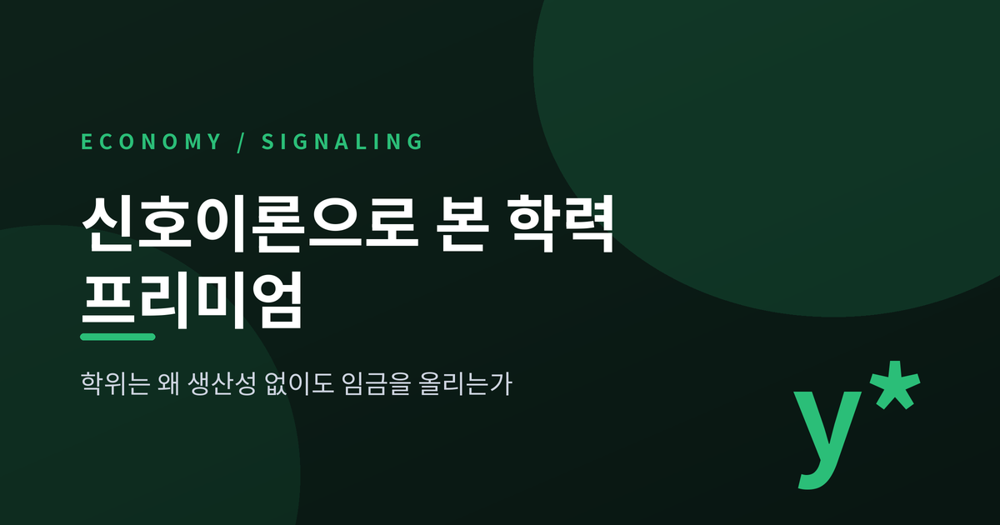
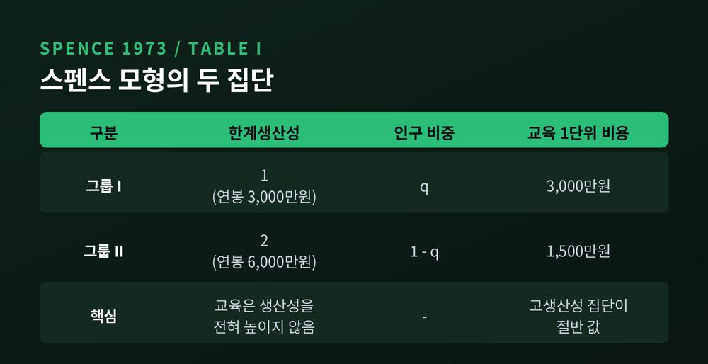
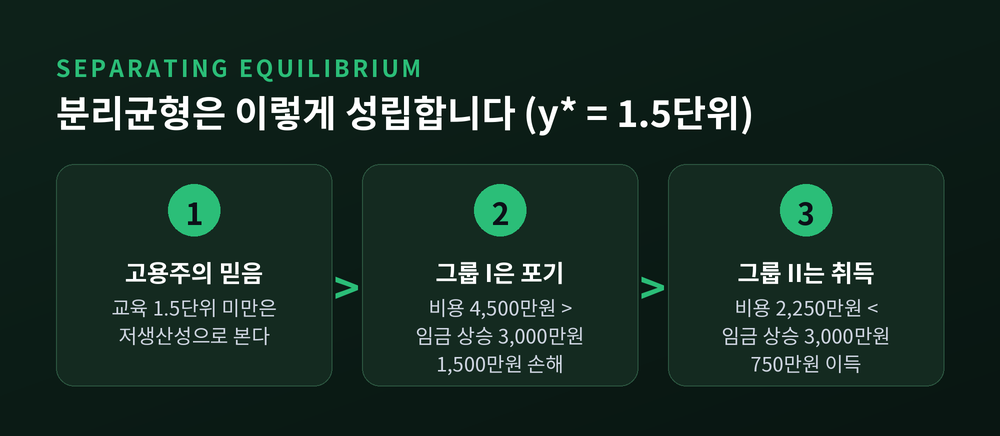
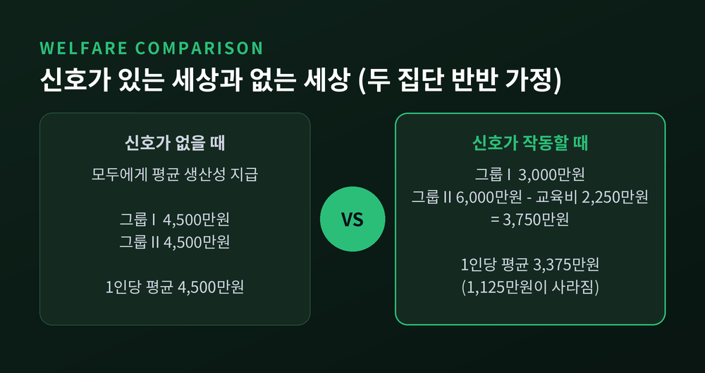
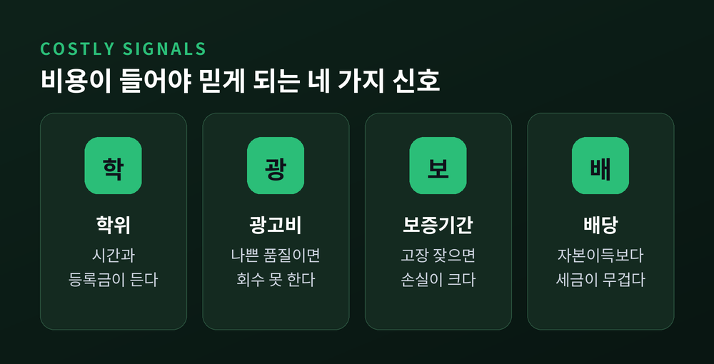
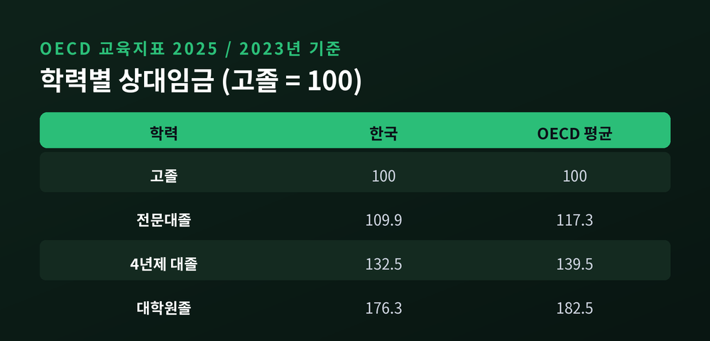

경제2026-08-16
이번 글에서는 마이클 스펜스의 신호이론을 정리해 보겠습니다. 학위가 실제 능력을 조금도 높이지 않는데도 임금 프리미엄이 생기는 이유, 그 프리미엄이 어떤 조건에서만 유지되는지를 스펜스가 쓴 원래 숫자를 따라가며 확인해 보려 합니다. 광고비와 보증기간, 기업 배당, 공작의 꼬리까지 같은 원리로 묶이는 대목도 함께 다룹니다.

스펜스의 논문은 1973년 8월 『Quarterly Journal of Economics』 87권 3호 355~374쪽에 실렸습니다. 하버드 박사학위 논문을 요약한 글입니다. 그는 2001년 조지 애컬로프, 조지프 스티글리츠와 함께 "정보 비대칭 시장 분석"으로 노벨경제학상을 공동 수상했습니다.
출발점은 담백합니다. 고용주는 채용 시점에 지원자의 생산성을 알 수 없습니다. 일을 배우는 데 시간이 걸리고, 계약기간 안에는 되돌릴 수도 없습니다.
그래서 스펜스는 이렇게 씁니다. "누군가를 채용하는 것은 흔히 복권을 사는 일이다."
고용주가 실제로 보는 것은 생산성이 아닙니다. 학력, 경력, 나이 같은 관찰 가능한 자료 더미입니다. 이 자료가 고용주의 확률적 믿음을 만들고, 그 믿음이 제시 임금을 정합니다.
스펜스는 여기서 용어를 둘로 나눕니다. 신호(signal)는 관찰 가능하면서 본인이 바꿀 수 있는 특성입니다. 교육이 대표적입니다. 지표(index)는 관찰은 되지만 본인이 바꿀 수 없는 특성입니다. 성별이나 인종이 여기 속합니다.
스펜스는 논문의 한 절 제목을 아예 "결정적 가정"이라고 붙였습니다. 내용은 한 줄로 요약됩니다.
신호비용이 생산능력과 음(−)의 상관을 갖지 않는 한, 신호는 지원자를 구별하지 못합니다.
이유는 간단합니다. 비용이 능력과 무관하면, 주어진 임금표 아래에서 모두가 똑같이 신호에 투자합니다. 그러면 신호로는 아무도 가려낼 수 없습니다.
노벨위원회의 설명도 같은 자리를 짚습니다. 신호는 발신자들 사이에서 비용이 충분히 다르지 않으면 성공할 수 없다는 것입니다.
오늘날 미시경제학은 이 조건을 단일교차조건(single-crossing condition), 혹은 스펜스-미를리스 조건이라 부릅니다. 능력이 높은 사람의 무차별곡선이 능력이 낮은 사람의 무차별곡선을 딱 한 번만 가로지른다는 뜻입니다.
여기서 비용은 등록금만이 아닙니다. 스펜스는 심리적 비용과 시간을 명시적으로 포함시켰습니다. 밤을 새우는 괴로움, 포기한 다른 기회 — 이것도 전부 신호비용입니다.

원 논문의 표를 그대로 옮기면 이렇습니다. 인구는 두 집단입니다. 그룹 I은 생산성이 1이고 교육 y단위를 사는 데 y가 듭니다. 그룹 II는 생산성이 2이고 같은 교육에 y/2가 듭니다. 그룹 I의 비중을 q₁이라 두겠습니다.
여기서 교육은 생산성을 단 한 톨도 높이지 않습니다. 모형의 가정입니다.
감이 오도록 금액을 붙여 보겠습니다. 생산성 1단위를 연봉 3,000만원으로 놓겠습니다. 그러면 그룹 I의 값어치는 3,000만원, 그룹 II는 6,000만원입니다. 교육 1단위 값은 그룹 I에게 3,000만원, 그룹 II에게 1,500만원입니다.
고용주가 이렇게 믿는다고 해 봅시다. "교육이 y* 미만이면 저생산성, y* 이상이면 고생산성이다."
y*를 1.5단위로 잡아 보겠습니다.
고용주의 믿음이 정확히 확인되었습니다. 분리균형(separating equilibrium)이 성립한 것입니다.
조건을 일반화하면 이렇습니다. 그룹 I이 포기하려면 y* > 1, 그룹 II가 취득하려면 y* < 2여야 합니다. 즉 1과 2 사이의 모든 y*가 균형입니다.
균형이 하나가 아니라 무수히 많다는 뜻입니다. 이 점이 뒤에서 발목을 잡습니다.

만약 아무도 신호를 보내지 않는다면 어떻게 될까요. 고용주는 모두에게 평균 생산성을 지급합니다. 두 집단이 반반이라면 평균은 1.5단위, 곧 4,500만원입니다.
이제 신호가 작동하는 세상과 비교해 보겠습니다.
양쪽 다 손해입니다. 스펜스는 이 대목을 이렇게 못 박습니다. "따라서 모두가 신호가 없는 상황을 선호할 것이다."
사회 전체로 보면 1인당 평균 3,375만원이 남습니다. 신호 없는 세상의 4,500만원과 비교하면 1,125만원이 사라졌습니다. 그 1,125만원이 바로 태워진 교육비입니다.
가장 서늘한 문장은 따로 있습니다. "y*가 올라가도 선별의 질은 조금도 나아지지 않는다. 실질 자원이나 심리적 자원만 소진할 뿐이다."
기준선이 높아져도 걸러지는 사람은 똑같습니다. 비용만 커집니다.
물론 균형에 따라 결과는 달라집니다. 스펜스는 고생산성 집단이 소수일 때, 정확히는 q₁이 1/2보다 클 때 그룹 II가 신호로 이득을 보는 균형이 존재한다고 밝혔습니다. 한쪽으로 단정할 문제는 아닙니다.

스펜스는 통합균형(pooling equilibrium)도 두 종류나 제시했습니다. 그중 두 번째가 훨씬 뼈아픕니다.
고용주가 "y* 미만이면 저생산성, y* 이상이면 평균"이라고 믿는다고 해 봅시다. y*를 0.4단위로 잡겠습니다. 그룹 I에게는 1,200만원, 그룹 II에게는 600만원짜리 문턱입니다.
이 문턱을 넘으면 둘 다 4,500만원을 받습니다. 넘지 않으면 3,000만원으로 떨어집니다. 그래서 두 집단 모두 학위를 땁니다.
결과를 보시죠. 학위는 아무 정보도 전달하지 않습니다. 그런데도 전원이 합리적으로 투자합니다. 혼자 그만두면 절약분보다 임금 손실이 크기 때문입니다.
스펜스의 결론은 이렇습니다. 존재한다는 사실만으로는 아무 정보도 주지 않고, 따라서 아무 기능도 하지 않는 안정적 채용 자격요건이 있을 수 있다는 것입니다.
여기서 더 중요한 대목이 있습니다. 이 균형은 비용이 능력과 상관관계를 가질 필요조차 없습니다. 두 집단의 교육비가 완전히 같아도 성립합니다. 신호로 기능할 수 없는 스펙에 모두가 돈을 붓는 상태입니다.
낯설지 않은 풍경일 것입니다.
같은 원리는 노동시장을 넘어갑니다. 핵심은 하나입니다. 손해가 있어야 믿긴다.
노벨위원회가 직접 열거한 후속 응용만 봐도 넓습니다. 비싼 광고와 파격적인 보증은 품질 신호, 공격적 가격 인하는 시장 지배력 신호, 부채를 통한 자금 조달은 수익성 신호로 읽힙니다.
배당이 가장 깔끔한 사례입니다. 배당은 이중과세 탓에 자본이득보다 세금이 무겁습니다. 사내에 유보해 주가를 올리는 편이 주주에게 더 싸게 이익을 주는 방법으로 보입니다. 그런데도 기업은 배당을 합니다.
시장이 배당을 호재로 읽고 주가를 더 높게 매기기 때문입니다. 그 상승분이 주주가 더 낸 세금을 보상합니다. 세금이라는 손해가 없다면 부실한 기업도 똑같이 흉내 낼 수 있습니다. 손해가 신호를 지탱하는 셈입니다.
생물학에도 같은 구조가 있습니다. 아모츠 자하비가 1975년에 내놓은 핸디캡 원리입니다. 공작의 꼬리는 거추장스럽기 때문에 진화했다는 주장입니다. 약한 개체가 같은 꼬리를 지는 비용이 강한 개체보다 크기 때문에, 그 꼬리는 정직한 신호가 됩니다.
앨런 그라펜이 1990년에 수학적 모형을 제시하면서 이 원리는 널리 받아들여졌습니다. 다만 아직 정리된 논쟁은 아닙니다. 2020년 『Biological Reviews』에 실린 펜과 사마도의 논문은 핸디캡 원리를 "잘못된 가설이 과학적 원리로 굳어진 사례"라고 정면 비판합니다. 여기서는 양쪽 견해를 그대로 적어 둡니다.

정반대편에는 게리 베커의 인적자본론이 있습니다. 교육은 실제로 생산성을 높이는 투자이며, 임금 상승은 그 대가라는 설명입니다.
1973년부터 1975년 사이에 이 설명을 향한 도전이 잇따랐습니다. 애로우의 필터 이론(1973), 스펜스의 신호이론(1973), 스티글리츠의 선별 이론(1975)입니다. 셋 다 주류 경제학 내부에서 나온 반론이었습니다.
신호와 선별의 차이는 누가 먼저 움직이느냐입니다. 신호는 정보를 가진 구직자가 먼저 나섭니다. 선별은 정보가 없는 고용주나 보험사가 계약 메뉴를 먼저 설계합니다.
실증의 무기가 양가죽 효과(sheepskin effect)입니다. 학위증을 양피지에 쓰던 관행에서 온 이름입니다. 학점 하나가 모자라 졸업하지 못한 사람과 졸업한 사람은 공부한 양이 사실상 같습니다. 그런데 소득은 다릅니다.
인적자본론이라면 소득은 재학연수에 매끄럽게 비례해야 합니다. 실제로는 12년과 16년 지점에서 계단이 생깁니다.
주요 추정치를 정리하면 이렇습니다.
| 연구 | 자료·방법 | 결과 |
|---|---|---|
| Hungerford & Solon (1987) | CPS, 스플라인·계단함수 | 16년차(대졸)에서 유의한 양의 효과. 고졸 학위 효과는 유의하지 않음 |
| Jaeger & Page (1996) | 1991~92 CPS(실제 학위 조사) | 한계 학위효과 7%(대학 중퇴)~31%(학사). 기존 추정치가 하향 편의였음 |
| Habermalz (2003) | NLSY79, 실제 경력 사용 | 학사 20.5%, 전문학위 53.5%. 중위회귀로는 각각 31.8%, 61.7% |
| Tyler·Murnane·Willett (2000) | 주별 GED 합격선 차이 | 순수 신호효과로 소득 10~19% 상승 |
| Clark & Martorell (2014) | 졸업시험 회귀불연속 | 고교 졸업장의 신호 가치 5~6% 초과를 기각 |
| Aryal·Bhuller·Lange (2022) | 노르웨이 의무교육법 도구변수 | 사적 수익 7.9% 중 생산성 70%, 신호 30% |
브라이언 캐플런은 2018년 『The Case Against Education』에서 교육 소득 증가분의 최대 80%가 신호라고 주장했습니다. 근거는 셋입니다. 양가죽 효과, 배운 내용의 급속한 망각, 그리고 개인 수익률 8~12% 대 국가 수익률 1~3%의 괴리입니다.
하지만 이 80%는 정설이 아닙니다. 헌팅턴-클라인은 인적자본과 신호를 실증적으로 완전히 분리하는 것 자체가 원리적으로 어렵다고 지적합니다. 하버말츠 역시 논문 각주에서 양가죽 효과가 인적자본 틀 안에서도 설명될 수 있다고 적었습니다.
무엇보다 위 표의 결과들이 서로 어긋납니다. GED의 신호 가치는 크게 나오고, 고교 졸업장의 신호 가치는 거의 없게 나옵니다. 아직 합의는 없습니다.
교육부와 한국교육개발원이 2025년 9월에 발표한 'OECD 교육지표 2025'를 보겠습니다.
한국 청년층(25~34세)의 고등교육 이수율은 70.6%입니다. 조사 대상 49개국 중 유일한 70%대이며, 2008년 이후 17년 연속 최상위입니다. 2위 캐나다가 68.86%, 3위 아일랜드가 66.19%입니다. 성인 전체로 보면 56.2%로, OECD 평균 41.9%를 크게 웃돕니다.
2023년 기준 학력별 상대임금은 이렇습니다.
| 학력 | 한국 | OECD 평균 |
|---|---|---|
| 고졸 | 100 | 100 |
| 전문대졸 | 109.9 | 117.3 |
| 4년제 대졸 | 132.5 | 139.5 |
| 대학원졸 | 176.3 | 182.5 |
흥미로운 대목이 있습니다. 진학률은 세계 최고인데, 학력 임금 프리미엄 자체는 OECD 평균보다 낮습니다. 신호이론의 언어로 읽으면 자연스러운 그림입니다. 거의 모두가 같은 신호를 보내면 그 신호의 변별력은 떨어집니다.
한 가지 덧붙이겠습니다. 고용노동부 계열 조사를 인용한 보도에서는 대졸을 100으로 놓았을 때 고졸이 62.7이라는 수치가 나옵니다. 고졸 기준으로 환산하면 대졸이 약 159가 되어 위 표와 차이가 큽니다. 조사 대상과 임금 정의가 다르기 때문으로 보이나 정확한 원인은 확인되지 않았습니다. 수치를 인용하실 때는 기준을 함께 밝히시길 권합니다.

스펜스는 자기 주장에 스스로 반론을 걸었습니다. "사회에는 정보 문제가 있고 적합한 사람을 적합한 자리에 배치해야 한다. 모형 속 교육은 그 선별을 실제로 수행하고 있으므로 사회적 수익이 0은 아니다."
그리고 이 반론을 "근거가 있다"고 인정했습니다.
여기가 중요합니다. 신호이론은 "교육이 쓸모없다"는 이론이 아닙니다. 선별은 사회에 필요한 기능입니다. 스펜스가 문제 삼은 것은 그 기능의 가격표입니다.
같은 선별을 더 싸게 해낼 방법이 있다면, 지금의 비용은 그만큼 낭비입니다. 신호이론이 정책에 던지는 질문은 그래서 이렇게 바뀝니다. "교육을 줄여야 하나"가 아니라 "우리는 지금 선별에 필요 이상의 비용을 태우고 있는가"입니다.
교육 보조금을 늘리는 정책도 다시 봐야 합니다. 모두가 한 단계씩 함께 올라가면 상대적 순위는 그대로이고 비용만 늘어납니다. 학력 인플레이션이 그 이름입니다.
예전엔 학위 자체가 희소한 정보였습니다. 지금은 청년 열에 일곱이 같은 신호를 들고 시장에 나옵니다. 신호가 흔해지면 사람들은 더 비싼 신호를 찾습니다. 대학원, 자격증, 어학성적, 인턴 경력이 줄줄이 붙는 이유입니다.
물론 신호이론만으로 모든 것이 설명되지는 않습니다. 노르웨이 자료를 쓴 2022년 연구의 70대 30이라는 추정치가 아마 현실에 가까울 것입니다. 교육은 생산성도 높이고 신호도 보냅니다. 비율이 쟁점일 뿐입니다.
정리하면 이렇습니다.
신호이론이 말하는 것은 학위가 가짜라는 이야기가 아닙니다. 정보 비대칭 시장에서 살아남는 정보에는 조건이 붙는다는 이야기입니다. "흉내 내기 쉬운 신호는 곧 흉내 내지고, 흉내 내지는 순간 정보이기를 그만둔다."
공작의 꼬리가 무겁고 광고비가 비싸고 배당에 세금이 붙는 이유가 전부 여기에 있습니다.
그렇다면 지금 우리가 치르는 학력 비용은 정보값일까요, 아니면 태워진 자원일까요. 스펜스의 답은 "둘 다"였습니다. 다만 그는 그 비율을 확인하지 않고 정책을 세우는 일을 경계했습니다. 저도 같은 자리에 서 있습니다.